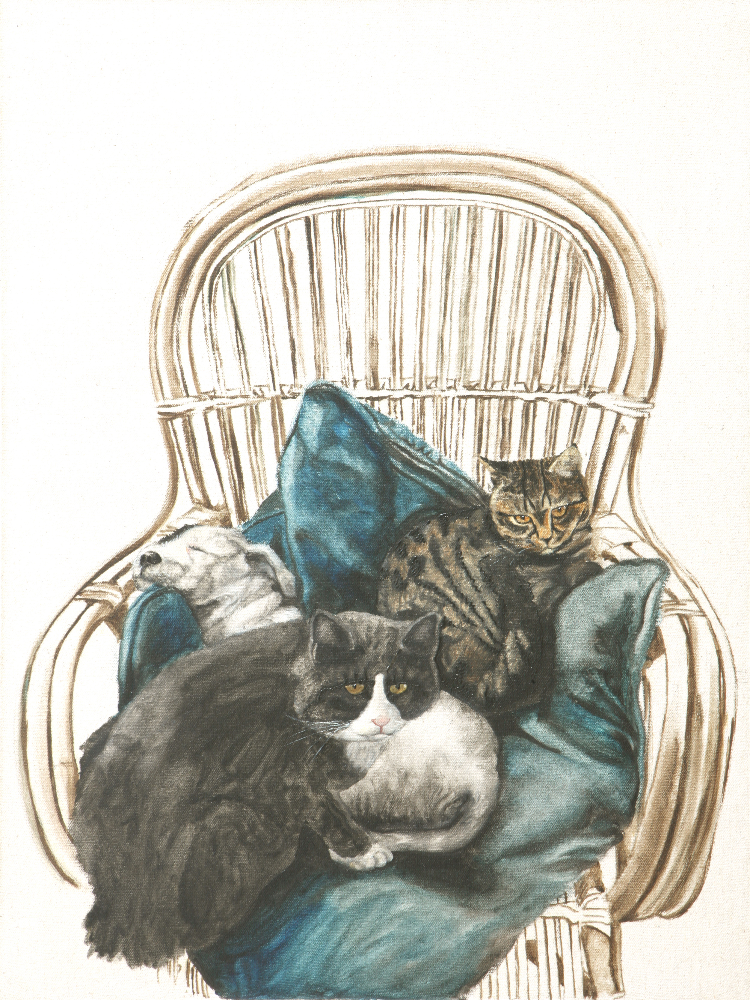
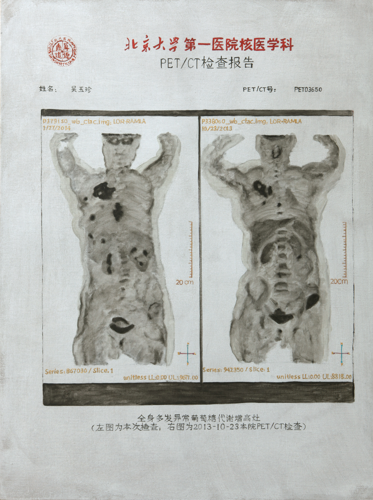
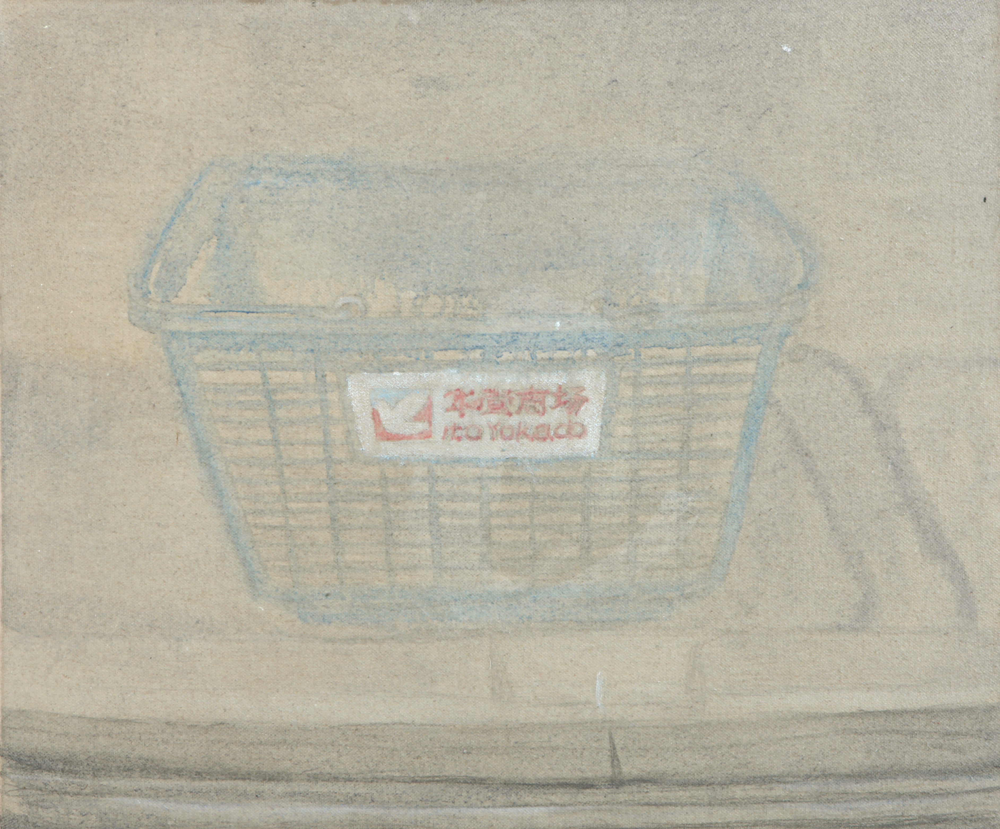
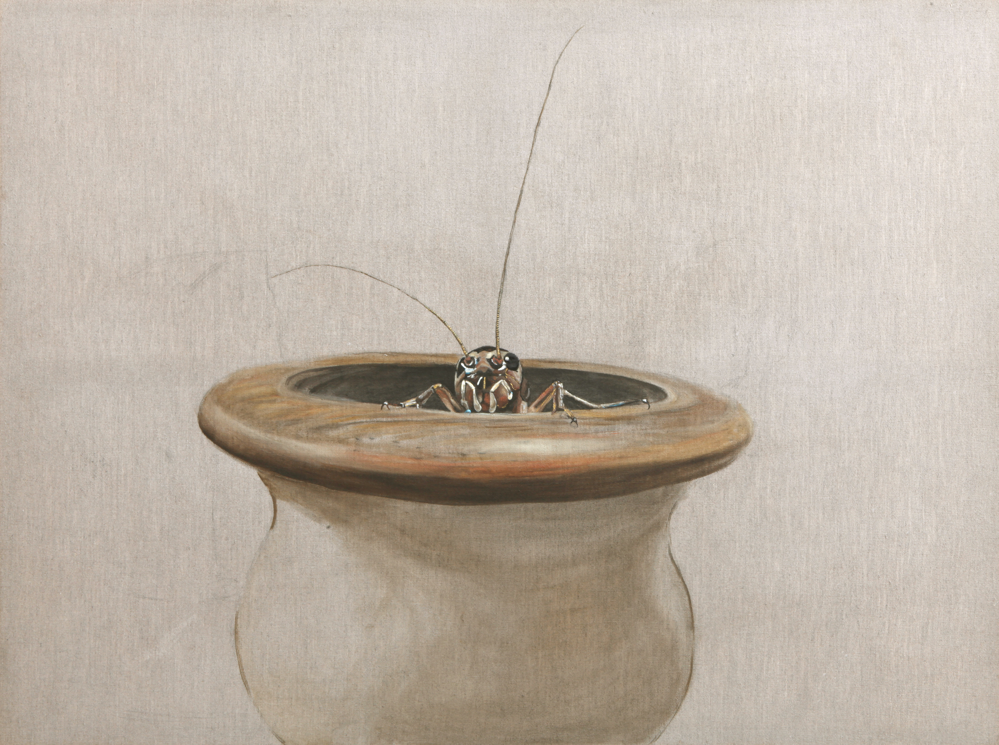
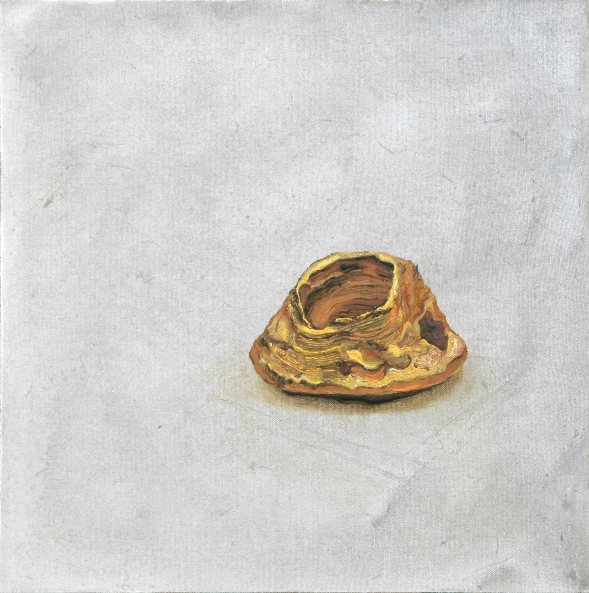

《日记》并不是按时间顺序记录私人生活的图像日记，而是从日常场景、对象、情绪切片与现实内部的异常感出发，把个体经验中最有压强的部分压缩成作品。它既保留生活的触点，又不只是叙事；真正重要的是，现实如何在人的感知内部形成不成比例的重量、错位和荒诞。
这一系列之所以适合作为作品档案的第一条正式主线，是因为它已经拥有足够多的作品、标题、气质与内部一致性。它可以先承担工作室里“作品如何被看见”的第一层结构。
Series Archive
这是目前最适合先做成正式系列页的一组作品。它从日常经验、心理切片与现实细节出发，把生活内部的错位、张力、荒诞与压缩感凝结成图像。
《日记》并不是按时间顺序记录私人生活的图像日记，而是从日常场景、对象、情绪切片与现实内部的异常感出发，把个体经验中最有压强的部分压缩成作品。它既保留生活的触点，又不只是叙事；真正重要的是，现实如何在人的感知内部形成不成比例的重量、错位和荒诞。
这一系列之所以适合作为作品档案的第一条正式主线，是因为它已经拥有足够多的作品、标题、气质与内部一致性。它可以先承担工作室里“作品如何被看见”的第一层结构。
Batch 01
先选那些最能体现“从现实细节进入作品压强”的图像，例如物件、事件、局部荒诞和可识别的日常切片。
Batch 02
再选那些能明显体现心理重力、异样感与轻微不适感的作品，让这个系列不只是生活记录，而是现实结构在体内的回声。
Batch 03
最后保留那些标题、图像和气质一眼能立住的作品，让《日记》先形成清楚的首批外观。
1. 先保留压强大的
优先选择那些一眼就能感到现实压力、心理错位和局部荒诞感的作品，不先选温和过渡件。
2. 先保留标题立得住的
《日记》很依赖标题和图像之间的互相顶住。先选标题本身就能把气质立出来的作品。
3. 先保留日常切口清楚的
优先那些从日常物件、身体、关系、生活事件切入，但又不只是记录本身的作品。
4. 避免重复气口
首批不要全是一个语气。应在身体、关系、物件、家务、病感、现实不适之间拉开层次。
5. 大小比例要错开
50x50、50x60、60x80、130x155 这些尺寸要混搭，避免整个系列外观过平。
6. 先选能代表第一印象的
首批不是穷尽全系列，而是先让别人一眼理解这是什么气质、什么问题、什么力量。













先做什么
这一轮已经把 18 件按新的观看节奏重排：先身体与冲击，再生活异样，最后落到物件、残留与轻微异感。这一轮已补上年份与状态字段。下一步可以开始逐件补真实年份、状态和必要的简短说明。
接下来怎么推进
先把《日记》做实，再去做《毛线球》。形成中的方向先保留为概念页，不急着堆图。
页面目标
这页最终会变成真实系列页，而不是只有说明。现在先把结构、判断和首批入口立住。